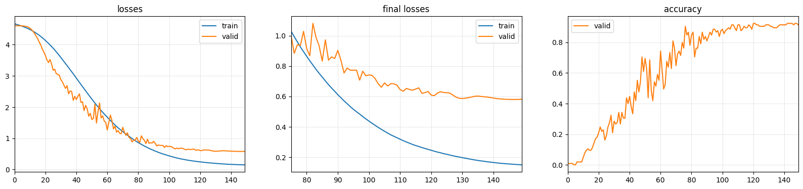
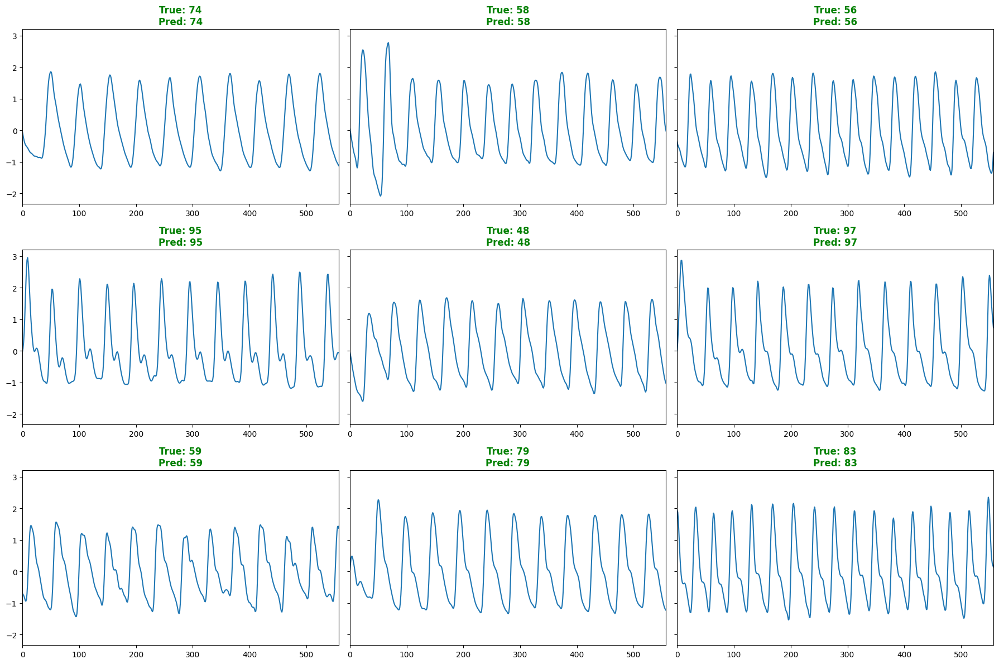
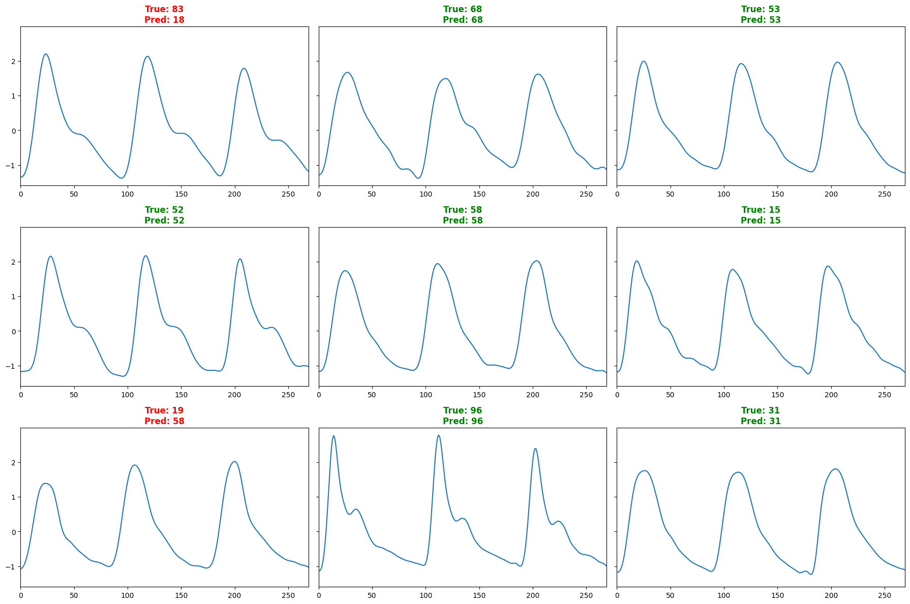

Introduction
I am leading the research on the feasibility of using PPG signals for identity detection in the Department of Computer Science and Technology at Tsinghua University. I achieved state-of-the-art results using DNN model in PPG multi-classification problems and further explored the feasibility of deep neural networks in identity authentication problems.

Research Direction
Currently, I am engaged in research on health detection under the supervision of Professor Yuntao Wang in the Department of Computer Science and Technology at Tsinghua University. Specifically, my focus lies in exploring the feasibility of using Photoplethysmogram (PPG) signals for identity verification.
I have conducted a series of studies on various methods for preprocessing PPG signals. Additionally, I have developed a set of functions in Python for PPG signal processing and data augmentation. The validation of identity-based classification using PPG signals has been completed, achieving a remarkable classification accuracy of 98% on a dataset of hundreds of individuals under “per session” conditions, and 87% accuracy on a dataset of thousands, reaching state-of-the-art (SOTA) performance using specific Deep Neural Network (DNN) models.
Currently, I am delving deeper into the possibilities of PPG signals in the realm of identity verification. My aspiration is to apply this technology, enabling individuals to perform online payments or identity verification using wearable devices such as smartwatches or fitness bands.

Significance of the Research
PPG signals, being a vital sign, have been proven to possess sufficient features for identity verification. Their ease of collection, non-intrusiveness, and vitality make them highly valuable with significant applications and market prospects. Identity recognition based on PPG signals can be applied to various scenarios such as mobile device payments, device matching, and device privacy protection. I am eager to contribute to advancements in this field.
About this Post
This post is written by Jason, licensed under undefined.